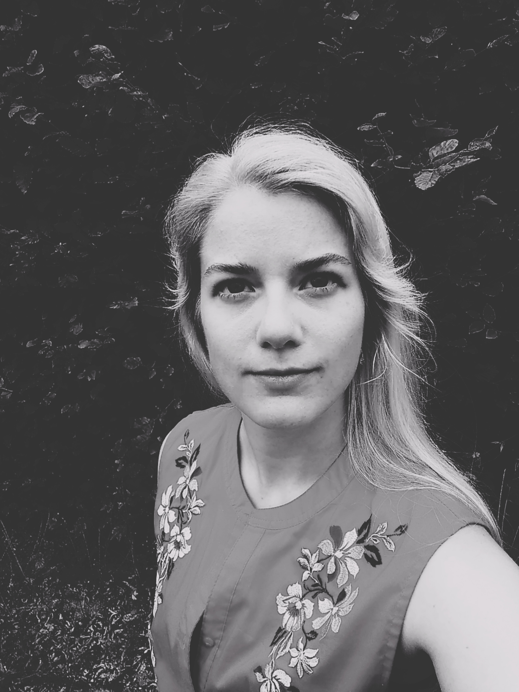

Meine Projekte

Jede Entwicklerin und Selbststudierende braucht eine Art Portfolio oder Reputation, eine Projektmappe um zeigen zu können, was man kann und was man noch lernen muss. Auch für zukünftige ArbeitgeberInnen ist es interessant
wenn nicht sogar notwendig, die Fähigkeiten und Arbeiten ihrer zukünftigen Mitarbeiterin zu kennen.
FreeCodeCamp-Projekte
- Hier kannst du dir meine verschiedenen Projekte ansehen, welche ich auf www.freecodecamp.org gemacht habe. Diese Website hat mir schon sehr viel beigebracht, und es gibt
dort einige sehr spannende Projekte zu machen. Manche wurden mit Schritt-für-Schritt Anleitung gemacht, andere waren "Freie Projekte" mit einer Angabe und einer leeren Boilerplate
Freecodecamp.org Projekte
Meine eigenen Projekte
- Natürlich wird es erst richtig interessant, wenn man seine ganz eigenen Projekte beginnt. Hier findest du alle Projekte und Ideen, welche ich alleine entworfen und gecoded habe.
| Projektname |
Idee |
Zeitraum |
| Eigene Website |
Überblick über alle Kenntnisse, Sammlung meiner Projekte, Lebenslauf und erstes eigenes Projekt |
seit Juli 2025 |
| Kochwebsite |
Rezepte, Ernährungswissen |
seit November 2025 |
| Projekte gesamt |
2 |